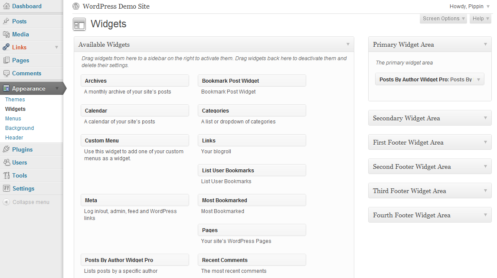

This widget will provide you a great way to list posts published by a particular author.
To install the plugin, unzip the downloaded file, then upload the folder "posts-by-author-widget-pro" to your wp-content/plugins directory.
Posts By Author Widget Pro is extremely simple to use. Simply place the newly available Posts By Author Widget Pro widget into a widgetized sidebar, then configure the settings. It works just like any other widget and should fit seamlessly into any WordPress theme.

Better Recent Posts Widget Pro includes 11 options that you may configure on a per-widget basis.
This option will let you choose the author you wish to display posts from. The users are listed by their username.
By enabling this option, the widget will display a list of the current author's other posts when on a single post page. This is useful for showing additional content from the current author.
This is the widget title that will be used when on a single post page, if Single Mode is enabled. This option will allow you to have a title such as the following: More Posts by Author Name.
You can dynamically display the name of the current author by using the {author} tag in your title. So if you wanted to say "More Posts By Author Name", where Author Name is replaced with the name of the author, you'd do: More Posts by {author}
This option will allow you to either show or disable the post title from being displayed. If this option is enabled, the post title will be linked with the permalink of the post.
This option will allow you to turn on or off the post publication date.
Check this box to include the number of comments after the post title. The comment number will be displayed like this: This is the Post Title (x). X is the number of comments and it will be linked to the comments page.
This will allow you to turn on / off the post excerpt display. If this box is checked, an excerpt of the post content will be displayed.
With this option, you can specify how long of an excerpt to display. The default length is 10. Enter an integer for the number of words you'd like displayed.
With this option, you can choose the order that posts are displayed, in either ascending or descending order. This option goes hand-in-hand with the next option, which controls how posts are sorted. So let's say you're sorting your posts by date, then this open will control whether the newest or the oldest posts are displayed first.
This option allows you to choose how the posts are sorted, alphabetically by title, by publication date, or randomly. If you choose to sort by date, then posts will be displayed in order, either newsest to oldest, or oldest to newest, depending on the option you have selected for #3. The "rand" option will cause the posts to be displayed in a random order.
This is the number of posts that will be displayed in the widget. By entering 5, only 5 posts will be displayed. You can enter any number here you wish.
The offset allows you to specify a number of posts to skip. By entering 2, the first post displayed would be the 3rd post in the database.
Enabling this option will cause the Featured Post thumbnails to be displayed to the left of the post title. This option only works for those posts which have a thumbnail defined.
This is the size of the post thumbnails displayed in pixels. Thumbnails are always square. So, if you want to show 40px square thumbnails, you'd enter 40 here. Only enter the number, do not enter any kind of unit, such as px.